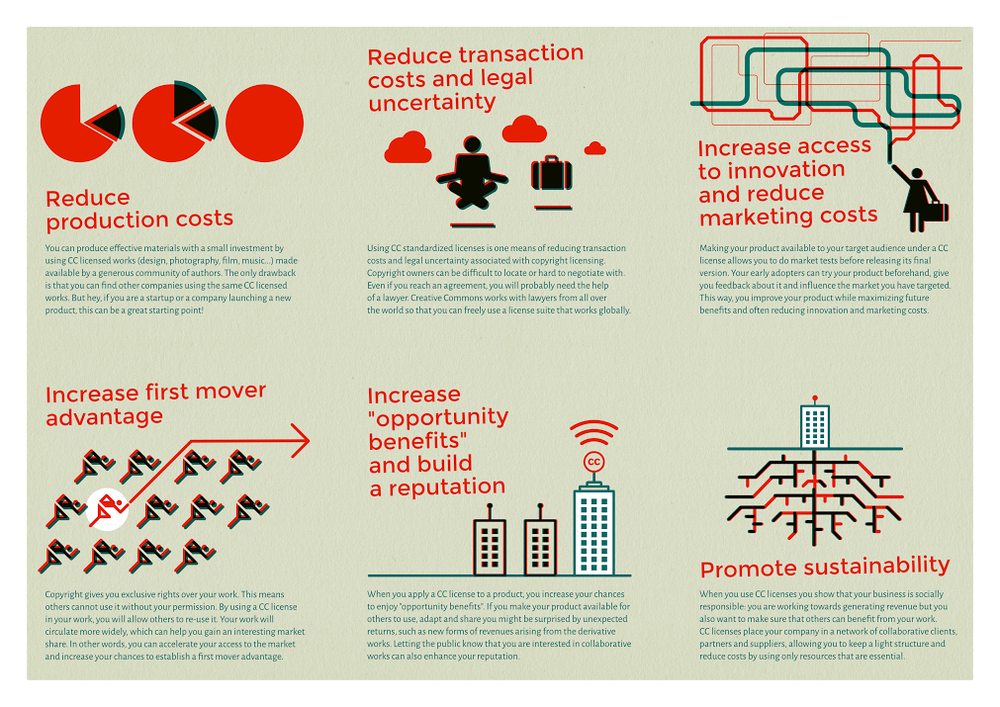

2015-11-30
2013年舉辦的CC全球高峰會中，CC葡萄牙提議要發展一些小工具來促成更多企業使用CC授權。他們指出，藝術家和創作者通常都較為清楚創用CC授權，但是當作者要顧及商業利益時，很難順理成章地說服他們採用創用CC授權。
葡萄牙主要因為兩個原因而對此計畫感興趣：
- CC葡萄牙在過去幾年陷入經濟危機，身為一個小型經濟體，業界希望能獲得盡可能多的資源來增加及維持在全球市場上的能見度。
- CC葡萄牙中，有具有創意產業商業發展及法律諮詢經驗的經濟學家與律師。
2015年的CC全球高峰會中，CC葡萄牙正式揭露了這些小工具，包含傳單、海報、影片，以及「開放商業模式規劃草圖」，讓有興趣的人能根據這個草圖來規劃開放商業模式。
除了目前發布的小工具，CC總部在Kickstarter上募資發行一本談開放商業模式的書籍：Made with Creative Commons: A book on Open Business Models，同時他們還在蒐集不同國家的各種案例，並發展關於創用CC對於業界的好處與壞處之常見問答。
CC葡萄牙在傳單與海報中，都強調使用創用CC授權可以帶來的六種經濟效益：
圖檔在此，以CC BY 4.0授權釋出。
1.減少製造成本
使用創用CC授權的作品，你可以明顯減少開發新產品或服務的投資。想像一下，你是個還無法確定會產生什麼影響力的新公司，沒有多少錢能聘請專業人士。現在，你有一個正要發布的新產品，萬事俱備只缺一個能吸引人的形象經營，此時就可以使用創用CC授權的作品(設計、攝影、影片、音樂等)，減少在此處的大量投資。或許你可以因此找到你夢寐以求的設計人才，在未來更有能力時直接聘僱他們進入你的公司。這可以用在產品設計與溝通、產品發展等各種情況。唯一的壞處是，可能也有其他產品或公司使用相同的創用CC授權作品。
2.減少交易成本與法律上的不確定性
標準化契約是減少交易成本與法律不確定性的一種方法。你們若使用過第三方享有著作權的作品，一定會注意到釐清權利的過程是多麼的麻煩。作品的作者或擁有人有時很難定位自己，有時則對於這一連串的協商不感興趣，而且這些使用條款常常讓交易失敗，或是當你達成協議後，會因為缺乏專業律師起草契約而陷入後續使用侵權的風險中。CC計畫已經和世界各地的律師合作超過十年，制定出來的授權條款在將近70個國家的司法體制下都能適用。目前已有上百萬人與企業使用，幾乎沒有授權上的法律爭議。因此，創用CC授權會是你在業界活動中重複使用音樂、圖像或影音時減少交易成本的最佳選擇。
3.增加創意取用機會並減少行銷成本
使用創用CC授權你的產品並讓它能被目標觀眾取用，無異於讓你的潛在客戶或合夥人實際嘗試產品並給予回饋，不僅能提前了解產品的真實影響力，也因為允許他人修改與再次利用而讓其對於產品更具熱情。而且，若是他們喜歡你的產品，將會主動與他們的社交圈分享，你也能將他們的回饋納入你的宣傳品中，讓更多人能藉此更了解產品而增加購買意願。你可以將此視為正式上市產品前的一種創新市場測試。如此一來，你將能在最大化未來效益的情況下改善產品，同時可以減少產品的行銷成本。
4.增加搶占先機的優勢
就經濟學而言，智慧財產權被看成避免潛在新人進入市場與現存主導公司競爭的工具。一方面，它避免你使用智慧財產權保障下原應讓所有人取用的產品，另一方面，它有時候會因為保護成本太高而使你的創意產品無法進入市場。以創用CC授權你的作品，你不只能提升市場對於產品的取用速度、增加市場佔有率，還可以藉由採取可持續經營的態度喚起眾人注意力。採用創用CC授權可以讓你觸及更多潛在客戶。一方面，創用CC授權的作品取用成本較低，可以因此吸引到新客戶群，另一方面，透過開放他人改編則可以讓你的產品能更符合顧客需求，增加客戶的付費意願。除了吸引客戶使用，你還能藉由了解這些潛在客戶的心聲來改善目前的產品或服務。這些好處對於設計師、建築師、影片製作人、作曲家、表演者等會更為明顯，但是也適用於其他產業。畢竟，在當今競爭激烈的全球市場中，創意是致勝關鍵。
5.增加機會利益並建立聲譽
當你做選擇時，必須以「放棄第二佳選項的利益」作為成本，這就是所謂的機會成本。然而，使用創用CC授權你的產品時，你有機會享受到「機會利益(opportunity benefit)」，也就是你讓他人可以重複使用、改作、分享你的作品，將能帶給你獲得國際合作夥伴的機會。有時候，創用CC授權則讓你有機會與其他創作者、使用者、顧客形成創新合作網絡，在此情形下你會更知道如何改善產品的設計或功能性。除此之外，使用創用CC授權可以建立你的名聲：你會讓公眾看到你對於合作與互動的興趣，而且你把他們當成合夥人一樣的看待。
6.促進持續發展性
使用創用CC授權的作品或是採取創用CC授權，都會向公眾傳遞一個訊息：「你的公司具有社會責任」，除了追求利潤，還會確保每個人能以不同方式從作品中獲得好處。另外，使用創用CC授權等於讓你的公司和客戶、供應者等人形成合作網絡，這樣的治理架構更為輕巧，避免過度封閉及壟斷，確保他人有機會發展新的商業模式、創造新產品與服務、產生新工作或利潤來源。如此一來，都會使你的企業更能持續運作。
CC葡萄牙之前曾辦了一個活動，鼓勵大家在「開放商業模式G+社群」中分享各自利用草圖後的規劃成果。若你有興趣了解如何利用這張草圖，或是想知道大家都設計怎樣的開放商業模式，都可以去社群看看，甚至加入開放商業模式的規劃與分享者行列！
資料來源：